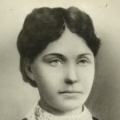

Sigvard Gabrielsen Akeleye
M, #65076, f. omtrent 1585, d. 1659
Biografi
| Sist redigert |
18 november 2011 00:00:00 |
Øllegaard Gerlofsdatter Nettelhorst
K, #65077, f. omtrent 1615, d. 1647
Biografi
Øllegaard Gerlofsdatter Nettelhorst ble født omtrent 1615 Idd, Halden, Østfold. Hun giftet seg med
Sigvard Gabrielsen Akeleye omtrent 1636. Hun døde i 1647.
| Sist redigert |
18 november 2011 00:00:00 |
Rilda Maren Olsen
K, #65083, f. 24 oktober 1921, d. 20 november 2011
Biografi
Rilda Maren Olsen ble født den 24 oktober 1921. Hun giftet seg med
Arne Hilmar Aalberg. Hun døde den 20 november 2011 på/i Namsos, Nord-Trøndelag. Hun ble gravlagt den 29 november 2011 på/i Namsos kirkegård, Namsos, Nord-Trøndelag.
Rilda Maren Olsen was also known as Rilda Maren Aalberg.
| Sist redigert |
20 mai 2015 00:00:00 |
Marie Palmstrøm
K, #65084, f. 1 september 1926, d. 1 oktober 1986
Biografi
Marie Palmstrøm ble født den 1 september 1926. Hun giftet seg med
Vidkun Hveding i 1948.
Vidkun Hveding og hun ble skilt i 1963. Hun døde den 1 oktober 1986.
Marie Palmstrøm was also known as Marie Hveding.
| Sist redigert |
23 november 2011 00:00:00 |
Tone Barth
K, #65085, f. 25 januar 1924, d. 10 oktober 1980
Biografi
Tone Barth ble født den 25 januar 1924. Hun giftet seg med
Vidkun Hveding i 1963. Hun døde den 10 oktober 1980.
Tone Barth was also known as Tone Hveding.
| Sist redigert |
23 november 2011 00:00:00 |
Anders Iversen Haugum
M, #65090, f. 2 april 1892
Foreldre
Biografi
Anders Iversen Haugum ble født den 2 april 1892 Byneset, Trondheim, Sør-Trøndelag.
Anders Iversen Haugum ble døpt den 15 mai 1892 på/i Byneset, Trondheim, Sør-Trøndelag.
| Sist redigert |
28 november 2011 00:00:00 |
| Slektskap | 10-menning 1 gang forskjøvet til Lovise Julie Eggan |
Berit Iversdatter Haugum
K, #65091, f. 22 august 1909, d. 17 oktober 1909
Foreldre
Biografi
Berit Iversdatter Haugum ble født den 22 august 1909 Byneset, Trondheim, Sør-Trøndelag. Hun døde den 17 oktober 1909 på/i Byneset, Trondheim, Sør-Trøndelag.
| Sist redigert |
28 november 2011 00:00:00 |
| Slektskap | 10-menning 1 gang forskjøvet til Lovise Julie Eggan |
Nils Olufsen Storch
M, #65095, f. omtrent 1665, d. før 1701
Foreldre
Biografi
Nils Olufsen Storch ble født omtrent 1665. Han giftet seg med
Aleth Pedersdatter Klæboe. Han døde før 1701. Nils ble borte på havet.
| Sist redigert |
17 juli 2022 00:42:58 |
| Slektskap | Bror av 7.tippoldefar/mor til Håkon Wahl |
Karen Olufsdatter Storch
K, #65096, f. 1664
Foreldre
Biografi
| Sist redigert |
28 februar 2021 00:00:00 |
| Slektskap | Søster av 7.tippoldefar/mor til Håkon Wahl |
Ingeborg Olufsdatter Storch
K, #65097, f. 1668
Foreldre
Biografi
Ingeborg Olufsdatter Storch ble født i 1668.
Ingeborg Olufsdatter Storch bodde i 1684 på/i Herøy, Nordland.
| Sist redigert |
1 desember 2011 00:00:00 |
| Slektskap | Søster av 7.tippoldefar/mor til Håkon Wahl |
Jonetta Jonsdatter Utstrand
K, #65098, f. før 1804
Biografi
Jonetta Jonsdatter Utstrand ble født før 1804.
| Sist redigert |
1 desember 2011 00:00:00 |
Karen Andersdatter
K, #65099, f. før 1800
Biografi
| Sist redigert |
1 desember 2011 00:00:00 |
Julia Allberg
K, #65100, f. 10 desember 1862, d. 3 november 1914
Foreldre

Julia Ulberg Wahl
Biografi
Julia Allberg ble født den 10 desember 1862 Lennox, South Dakota, USA. Hun giftet seg med
Jens Magnus Fredriksen Wahl i 1883. Hun døde den 3 november 1914 på/i Canton, South Dakota, USA. Hun ble gravlagt på/i Forest Hill Cemetery, Canton, Lincoln County, South Dakota, USA.
Julia Allberg was also known as Julia Wahl. Hun was also known as Julia Ulberg Wahl. Hun og
Jens Magnus Fredriksen Wahl. hadde syv barn - to døde unge.
| Sist redigert |
23 juni 2026 21:32:51 |
{kind=link}